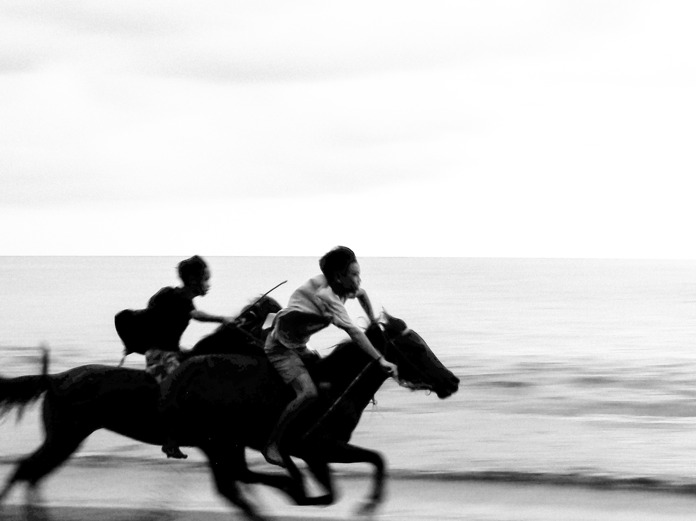

<!-- HERO SECTION -->
  <section class="relative h-screen w-full flex items-end pb-16 md:pb-24 px-6 md:px-14 overflow-hidden">
    <!-- Background Hero Image -->
    <div class="absolute inset-0 z-0">
      <!-- Ganti src dengan link foto Anda di GitHub -->
      
      <!-- Overlay gelap agar teks lebih terbaca -->
      <div class="absolute inset-0 bg-gradient-to-t from-obsidian via-obsidian/30 to-transparent"></div>
    </div>

    <div class="relative z-10 max-w-5xl">
      <h1 class="font-editorial text-6xl sm:text-8xl md:text-[10rem] font-normal leading-[0.85] text-white mb-4 tracking-tight">
        PIPONE
      </h1>
      <p class="font-editorial text-2xl sm:text-4xl md:text-5xl italic font-light text-sand/90 mb-8 tracking-wide">
        Stray Dog
      </p>
      <div class="flex flex-wrap items-center gap-6">
        <a href="#portfolio" class="text-xs tracking-[0.25em] uppercase border-b border-sand/50 pb-1.5 text-white hover:text-sand hover:border-sand transition duration-300">
          Explore Selected Works &rarr;
        </a>
      </div>
    </div>
  </section>
